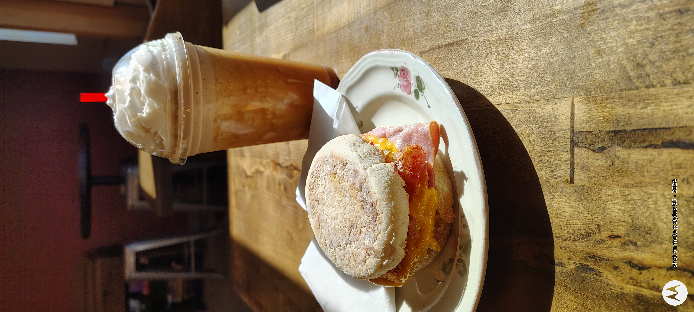
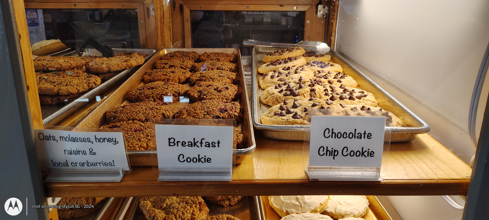
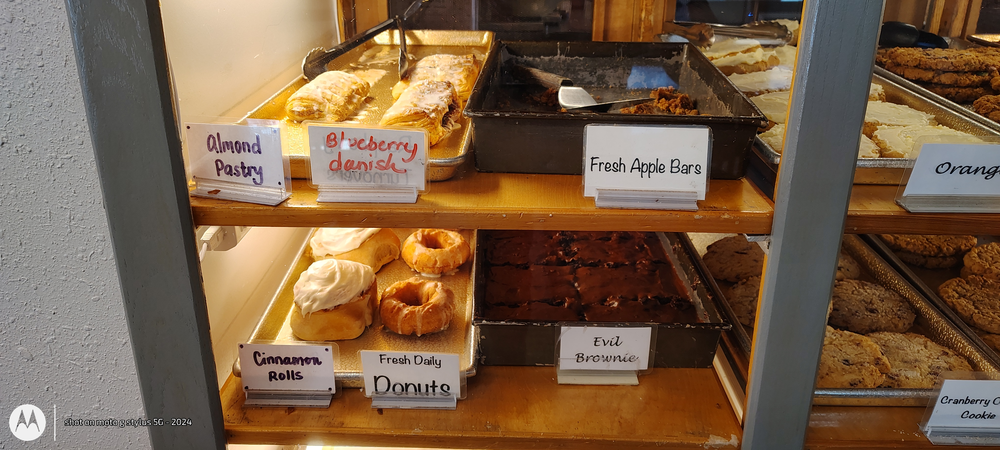
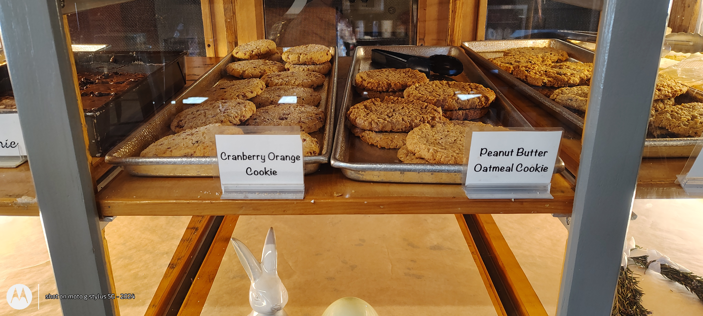
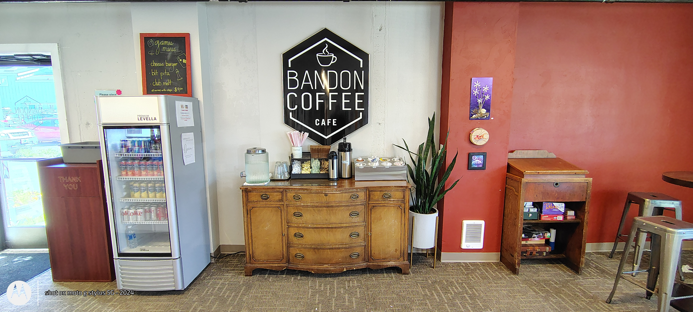

Featured experience
This is the hook.
The goal is not to dump information. The goal is to make someone feel like they just discovered a local gem worth stepping into, ordering from, and returning to.

What ScanCraft is doing here
Turning a physical cafe visit into a layered digital experience: featured items, bakery highlights, menu storytelling, and a brand atmosphere that stays with the customer after the visit ends.
- Feature signature items with rich visuals
- Guide first-time customers toward easy wins
- Create higher perceived value without changing operations
Bakery case
Visual abundance sells.
One of the strongest assets in-store is the bakery case. It communicates freshness, choice, comfort, and personality immediately.




Story layer
“This is the kind of place people want to tell other people about.”
That is the leverage point. ScanCraft doesn’t need to invent a fake identity here. It only needs to capture, package, and amplify what already exists in the room: comfort, food quality, local flavor, and a visual experience strong enough to convert curiosity into action.
1stVisual impression gets elevated before the owner says a word.
2ndFeatured items guide what a new customer is most likely to order.
3rdDigital experience keeps the brand alive beyond the counter.
Proof of concept
This is already enough to impress.
Even with simple in-store captures, the cafe already presents as warm, established, and layered. With a proper ScanCraft finish, this becomes a polished client-facing digital experience.
Professional presentation
A cafe that feels more premium online without needing a full rebuild of operations, branding, or staffing.
Confidence in ordering
Photos, highlights, and guided picks make the experience easier, more engaging, and more memorable.
Real-world business lift
Physical-to-digital storytelling works especially well for spaces where atmosphere and product visuals already carry emotional weight.
ScanCraft close
Bandon Coffee Cafe, but elevated.
This demo shows exactly how ScanCraft can turn a local cafe into a richer digital experience: cleaner presentation, higher perceived value, better product storytelling, and a stronger emotional connection the second someone scans in.
ScanCraft • Premium digital experience layer for physical businesses